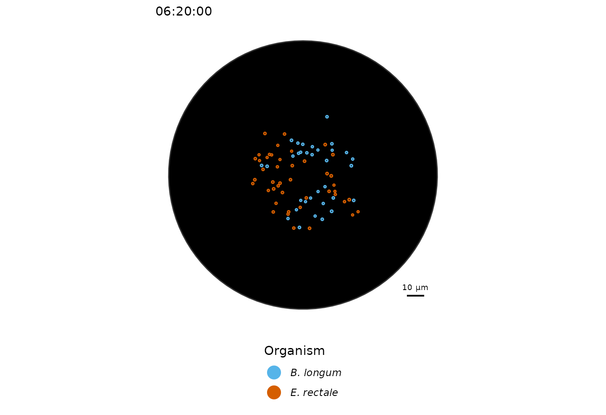
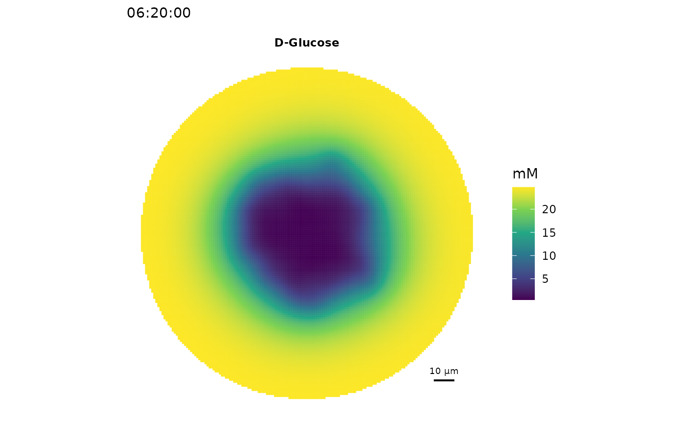

Cross-feeding of two gastrointestinal bacteria
Silvio Waschina
2022-01-13
Crossfeeding.Rmd
library(Eutropia)
#> Loading required package: data.table
#> Loading required package: sybil
#> Loading required package: Matrix
#> Loading required package: lattice
#> Loading required package: particles
#>
#> Attaching package: 'particles'
#> The following objects are masked from 'package:stats':
#>
#> filter, simulate
#> Loading required package: hms
#> Welcome to Eutropia.Background
The intestinal bacterium Eubacterium rectale is known to be able to use acetate as energy source under anaerobic conditions and thereby forms butyrate as end product (Rivère et al. (2015) Appl Envrion Microbiol). Acetate is a common fermentation end product in a number of different other intestinal bacteria, including Bifidobacteria (e.g. Bifidobacterium longum). In this tutorial, a co-culture experiment of both species is simulated in an aerobic environment that contains glucose as sole source of carbon an energy. It will be tested if acetate cross-feeding occurs and how the organism’s affect each others population growth.
The setup
As growth environment, a Petri dish-shaped growth area will be defined with a radius of 80 micro meters. The space for metabolite concentrations is rasterized by rhombic dodecahedrons of size 1 µm (distance between adjacent field centers). The chemical growth environment consists of 8 field layers in height.
# create simulation environment
sim <- init_simulation("Petri_80",
gridFieldSize = 1,
gridFieldLayers = 8)Next, we will read the models for both organisms and place 15 cells each in the growth environment.
# add organisms (15 cells of each as 'starter culture')
models <- list()
models[['eure']] <- readRDS(system.file("extdata", "eure.RDS", package="Eutropia"))
models[['bilo']] <- readRDS(system.file("extdata", "bilo.RDS", package="Eutropia"))
sim <- add_organism(sim, model = models[['eure']], name = "E. rectale",
ncells = 15, distribution.radius = 25,
open.bounds = 1)
sim <- add_organism(sim, model = models[['bilo']], name = "B. longum",
ncells = 15, distribution.radius = 25,
open.bounds = 1)It is not required, but out of curiosity the initial spatial distribution of cells can be plotted.
plot_cells(sim,
scalebar.color = "black")
Now we have an simulation object with cells. What so far is missing are nutrients, or a growth medium.
# Load a medium table
dt_medium <- fread(system.file("extdata", "medium.csv", package="Eutropia"))
# adding compounds
sim <- add_compounds(sim,
compounds = dt_medium$cpd.id,
concentrations = dt_medium$mM,
compound.names = dt_medium$cpd.name,
is.constant = dt_medium$is.constant)The simulation
We are all set to run our first simulation. It will run for 50 iterations (= 500 minutes simulated time). The simulation may take around 4 minutes 30 seconds to finish, because of the option lim_time = 4.5, while the last iteration is allowed to finish even if the time limit is exceeded. You can of course increase the time limit. The number of iterations depends on the systems performance with a here defined limit of 50 iterations.
sim <- run_simulation(sim, niter = 50, verbose = 1, lim_time = 4.5)
#> Initalising simulations using 1 CPU cores...
#> LP-solver: glpkAPI
#> [00:00:00] Simulation round 1 (30 cells, 8.40 pg dBM)
#> E. rectale(4.49) B. longum(4.44)
#> [00:00:08] Simulation round 2 (30 cells, 8.93 pg dBM)
#> E. rectale(4.81) B. longum(4.69)
#> [00:00:14] Simulation round 3 (30 cells, 9.49 pg dBM)
#> E. rectale(5.14) B. longum(4.95)
#> [00:00:21] Simulation round 4 (30 cells, 10.09 pg dBM)
#> E. rectale(5.51) B. longum(5.23)
#> [00:00:27] Simulation round 5 (30 cells, 10.73 pg dBM)
#> E. rectale(5.89) B. longum(5.52)
#> [00:00:33] Simulation round 6 (30 cells, 11.40 pg dBM)
#> E. rectale(6.26) B. longum(5.81)
#> [00:00:40] Simulation round 7 (30 cells, 12.07 pg dBM)
#> E. rectale(6.63) B. longum(6.09)
#> [00:00:47] Simulation round 8 (30 cells, 12.72 pg dBM)
#> E. rectale(6.98) B. longum(6.36)
#> [00:00:53] Simulation round 9 (30 cells, 13.35 pg dBM)
#> E. rectale(7.33) B. longum(6.63)
#> [00:01:00] Simulation round 10 (30 cells, 13.96 pg dBM)
#> E. rectale(7.67) B. longum(6.88)
#> [00:01:06] Simulation round 11 (30 cells, 14.56 pg dBM)
#> E. rectale(8.01) B. longum(7.13)
#> [00:01:13] Simulation round 12 (30 cells, 15.14 pg dBM)
#> E. rectale(8.32) B. longum(7.37)
#> [00:01:19] Simulation round 13 (36 cells, 15.69 pg dBM)
#> E. rectale(8.72) B. longum(7.6)
#> [00:01:25] Simulation round 14 (42 cells, 16.32 pg dBM)
#> E. rectale(9.19) B. longum(7.83)
#> [00:01:32] Simulation round 15 (45 cells, 17.02 pg dBM)
#> E. rectale(9.68) B. longum(8.06)
#> [00:01:39] Simulation round 16 (47 cells, 17.74 pg dBM)
#> E. rectale(10.14) B. longum(8.31)
#> [00:01:46] Simulation round 17 (50 cells, 18.46 pg dBM)
#> E. rectale(10.59) B. longum(8.58)
#> [00:01:53] Simulation round 18 (52 cells, 19.18 pg dBM)
#> E. rectale(11.04) B. longum(8.87)
#> [00:02:00] Simulation round 19 (56 cells, 19.91 pg dBM)
#> E. rectale(11.46) B. longum(9.17)
#> [00:02:07] Simulation round 20 (57 cells, 20.63 pg dBM)
#> E. rectale(11.88) B. longum(9.46)
#> [00:02:15] Simulation round 21 (60 cells, 21.34 pg dBM)
#> E. rectale(12.29) B. longum(9.77)
#> [00:02:22] Simulation round 22 (60 cells, 22.06 pg dBM)
#> E. rectale(12.71) B. longum(10.06)
#> [00:02:30] Simulation round 23 (60 cells, 22.77 pg dBM)
#> E. rectale(13.11) B. longum(10.35)
#> [00:02:37] Simulation round 24 (60 cells, 23.45 pg dBM)
#> E. rectale(13.49) B. longum(10.62)
#> [00:02:45] Simulation round 25 (60 cells, 24.11 pg dBM)
#> E. rectale(13.88) B. longum(10.89)
#> [00:02:52] Simulation round 26 (62 cells, 24.77 pg dBM)
#> E. rectale(14.28) B. longum(11.14)
#> [00:02:59] Simulation round 27 (62 cells, 25.41 pg dBM)
#> E. rectale(14.66) B. longum(11.38)
#> [00:03:07] Simulation round 28 (63 cells, 26.04 pg dBM)
#> E. rectale(15.04) B. longum(11.61)
#> [00:03:15] Simulation round 29 (64 cells, 26.66 pg dBM)
#> E. rectale(15.41) B. longum(11.84)
#> [00:03:22] Simulation round 30 (64 cells, 27.25 pg dBM)
#> E. rectale(15.77) B. longum(12.06)
#> [00:03:30] Simulation round 31 (66 cells, 27.83 pg dBM)
#> E. rectale(16.15) B. longum(12.28)
#> [00:03:38] Simulation round 32 (68 cells, 28.43 pg dBM)
#> E. rectale(16.53) B. longum(12.5)
#> [00:03:45] Simulation round 33 (72 cells, 29.03 pg dBM)
#> E. rectale(16.91) B. longum(12.72)
#> [00:03:54] Simulation round 34 (74 cells, 29.64 pg dBM)
#> E. rectale(17.3) B. longum(12.96)
#> [00:04:02] Simulation round 35 (77 cells, 30.25 pg dBM)
#> E. rectale(17.69) B. longum(13.2)
#> [00:04:11] Simulation round 36 (77 cells, 30.88 pg dBM)
#> E. rectale(18.07) B. longum(13.43)
#> [00:04:19] Simulation round 37 (80 cells, 31.50 pg dBM)
#> E. rectale(18.48) B. longum(13.67)
#> [00:04:27] Simulation round 38 (80 cells, 32.15 pg dBM)
#> E. rectale(18.89) B. longum(13.9)Analyse the environment after the simulation
The package comes with a number of functions to plot simulation results.
# Plot spatial distribution of cells
plot_cells(sim, scalebar.color = "black")
# Spatial distribution of glucose
plot_environment(sim, compounds = c("cpd00027_e0"),
scalebar.color = "black")
# Spatial distribution of acetate, lactate and butyrate
plot_environment(sim,
compounds = c("cpd00029_e0","cpd00211_e0","cpd00159_e0"),
scalebar.color = "black")
# growth curves (total cell mass by species)
plot_growth(sim)
# dynamics in metabolite concentrations (calculated by total environment volume)
plot_compounds(sim, compounds = c("cpd00029_e0","cpd00211_e0","cpd00159_e0"))
The consumed and produced metabolites can be retrieved for the simulations.
summary_exchanges(sim)
#> type compound compound.name fmol
#> 1: E. rectale cpd00001_e0 Water 1.869472e+01
#> 2: E. rectale cpd00009_e0 Phosphate -5.434022e-01
#> 3: E. rectale cpd00027_e0 D-Glucose -8.808150e+00
#> 4: E. rectale cpd00034_e0 Zn2+ -2.954440e-03
#> 5: E. rectale cpd00048_e0 Sulfate -2.954440e-03
#> 6: E. rectale cpd00149_e0 Co2+ -2.954440e-03
#> 7: E. rectale cpd10516_e0 Fe3+ -2.954440e-03
#> 8: E. rectale cpd00067_e0 H+ 5.696337e+00
#> 9: E. rectale cpd00063_e0 Ca2+ -2.954440e-03
#> 10: E. rectale cpd00058_e0 Cu2+ -2.954440e-03
#> 11: E. rectale cpd10515_e0 Fe2+ -7.138828e-03
#> 12: E. rectale cpd00205_e0 K+ -2.954440e-03
#> 13: E. rectale cpd00099_e0 Cl- -2.954440e-03
#> 14: E. rectale cpd00013_e0 Ammonium -3.474710e+00
#> 15: E. rectale cpd00011_e0 CO2 1.099890e+01
#> 16: E. rectale cpd00029_e0 Acetate -5.639867e+00
#> 17: E. rectale cpd00363_e0 Ethanol 1.210381e+00
#> 18: E. rectale cpd00239_e0 H2S -9.057675e-02
#> 19: E. rectale cpd00211_e0 Butyrate 8.634518e+00
#> 20: E. rectale cpd00030_e0 Mn2+ -2.954440e-03
#> 21: E. rectale cpd00254_e0 Mg2+ -2.954440e-03
#> 22: B. longum cpd00001_e0 Water 5.977465e+00
#> 23: B. longum cpd00009_e0 Phosphate -3.210702e-01
#> 24: B. longum cpd00030_e0 Mn2+ -1.745636e-03
#> 25: B. longum cpd00048_e0 Sulfate -1.745636e-03
#> 26: B. longum cpd00149_e0 Co2+ -1.745636e-03
#> 27: B. longum cpd00067_e0 H+ 1.563470e+01
#> 28: B. longum cpd00027_e0 D-Glucose -7.072392e+00
#> 29: B. longum cpd00013_e0 Ammonium -2.071581e+00
#> 30: B. longum cpd00063_e0 Ca2+ -1.745636e-03
#> 31: B. longum cpd00058_e0 Cu2+ -1.745636e-03
#> 32: B. longum cpd00205_e0 K+ -1.745636e-03
#> 33: B. longum cpd00159_e0 L-Lactate 4.121097e+00
#> 34: B. longum cpd00254_e0 Mg2+ -1.745636e-03
#> 35: B. longum cpd00011_e0 CO2 6.744255e-01
#> 36: B. longum cpd00029_e0 Acetate 9.898762e+00
#> 37: B. longum cpd00363_e0 Ethanol 6.472899e-14
#> 38: B. longum cpd00239_e0 H2S -5.351744e-02
#> 39: B. longum cpd00034_e0 Zn2+ -1.745636e-03
#> 40: B. longum cpd00099_e0 Cl- -1.745636e-03
#> 41: B. longum cpd10515_e0 Fe2+ -4.217990e-03
#> 42: B. longum cpd10516_e0 Fe3+ -1.745636e-03
#> 43: B. longum cpd00229_e0 Glycolaldehyde 3.708530e-03
#> 44: B. longum cpd03091_e0 5'-Deoxyadenosine 3.708530e-03
#> 45: B. longum cpd00211_e0 Butyrate -1.941927e-15
#> 46: E. rectale cpd00971_e0 Sodium 1.977443e-13
#> 47: E. rectale cpd00281_e0 GABA 1.837053e-14
#> type compound compound.name fmolIn addition, the same information can be retrieved for earlier iterations in the simulation.
summary_exchanges(sim, iter = 10)
#> type compound compound.name fmol
#> 1: E. rectale cpd00001_e0 Water 1.513342e+01
#> 2: E. rectale cpd00009_e0 Phosphate -4.708856e-01
#> 3: E. rectale cpd00027_e0 D-Glucose -8.133354e+00
#> 4: E. rectale cpd00034_e0 Zn2+ -2.560172e-03
#> 5: E. rectale cpd00048_e0 Sulfate -2.560172e-03
#> 6: E. rectale cpd00149_e0 Co2+ -2.560172e-03
#> 7: E. rectale cpd10516_e0 Fe3+ -2.560172e-03
#> 8: E. rectale cpd00067_e0 H+ 7.003960e+00
#> 9: E. rectale cpd00971_e0 Sodium 1.384826e-13
#> 10: E. rectale cpd00063_e0 Ca2+ -2.560172e-03
#> 11: E. rectale cpd00058_e0 Cu2+ -2.560172e-03
#> 12: E. rectale cpd10515_e0 Fe2+ -6.186158e-03
#> 13: E. rectale cpd00205_e0 K+ -2.560172e-03
#> 14: E. rectale cpd00099_e0 Cl- -2.560172e-03
#> 15: E. rectale cpd00013_e0 Ammonium -3.011013e+00
#> 16: E. rectale cpd00011_e0 CO2 9.153864e+00
#> 17: E. rectale cpd00029_e0 Acetate -1.752933e+00
#> 18: E. rectale cpd00363_e0 Ethanol 1.738121e+00
#> 19: E. rectale cpd00239_e0 H2S -7.848936e-02
#> 20: E. rectale cpd00211_e0 Butyrate 6.415744e+00
#> 21: E. rectale cpd00030_e0 Mn2+ -2.560172e-03
#> 22: E. rectale cpd00254_e0 Mg2+ -2.560172e-03
#> 23: B. longum cpd00001_e0 Water 6.570972e+00
#> 24: B. longum cpd00009_e0 Phosphate -3.529495e-01
#> 25: B. longum cpd00030_e0 Mn2+ -1.918962e-03
#> 26: B. longum cpd00048_e0 Sulfate -1.918962e-03
#> 27: B. longum cpd00149_e0 Co2+ -1.918962e-03
#> 28: B. longum cpd00067_e0 H+ 1.718708e+01
#> 29: B. longum cpd00027_e0 D-Glucose -7.774616e+00
#> 30: B. longum cpd00013_e0 Ammonium -2.277271e+00
#> 31: B. longum cpd00063_e0 Ca2+ -1.918962e-03
#> 32: B. longum cpd00058_e0 Cu2+ -1.918962e-03
#> 33: B. longum cpd00205_e0 K+ -1.918962e-03
#> 34: B. longum cpd00159_e0 L-Lactate 4.530284e+00
#> 35: B. longum cpd00254_e0 Mg2+ -1.918962e-03
#> 36: B. longum cpd00011_e0 CO2 7.413898e-01
#> 37: B. longum cpd00029_e0 Acetate 1.088162e+01
#> 38: B. longum cpd00363_e0 Ethanol -3.549525e-14
#> 39: B. longum cpd00239_e0 H2S -5.883123e-02
#> 40: B. longum cpd00034_e0 Zn2+ -1.918962e-03
#> 41: B. longum cpd00099_e0 Cl- -1.918962e-03
#> 42: B. longum cpd10515_e0 Fe2+ -4.636798e-03
#> 43: B. longum cpd10516_e0 Fe3+ -1.918962e-03
#> 44: B. longum cpd00229_e0 Glycolaldehyde 4.076754e-03
#> 45: B. longum cpd03091_e0 5'-Deoxyadenosine 4.076754e-03
#> 46: B. longum cpd00211_e0 Butyrate -1.005651e-14
#> type compound compound.name fmolThe results should clearly show that, while acetate is produced by B. longum, it is consumed by E. rectale.